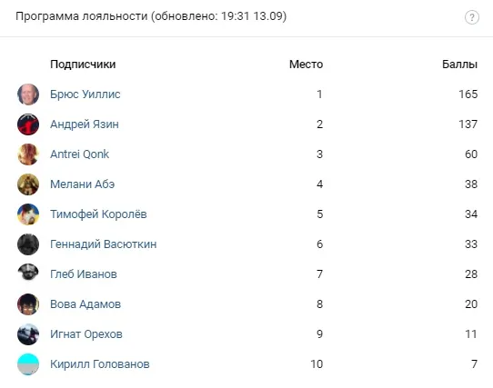

Итоги лояльности
ВКонтакте
✨Сегодня мы снова благодарим [id347679904|Андрея Язина] за финансовую поддержку …
13 сентября 2020 · №489 в выгрузке стены · оригинал во ВКонтакте ↗
![✨Сегодня мы снова благодарим [id347679904|Андрея Язина] за финансовую поддержку …](../img/vk/489_0t.webp)

#ИтогиЛояльности@criticssteam #11
=====================
✨Сегодня мы снова благодарим [id347679904|Андрея Язина] за финансовую поддержку нашего сообщества, огромное спасибо! ✨
=====================
⏳А итоги программы [https://vk.com/@criticssteam-programma-loyalnosti?ref=group_block|лояльности] за эту неделю, такие же как и за прошлую:
🎖 [id491132613|Брюс Уиллис]
🎖 [id347679904|Андрей Язин]
🎖 [id469634406|Antrei Qonk]
Ниже ТОП-10 по активности.
======
.Всем счастья. The Platters - 16 Tons
=====================
✨Сегодня мы снова благодарим [id347679904|Андрея Язина] за финансовую поддержку нашего сообщества, огромное спасибо! ✨
=====================
⏳А итоги программы [https://vk.com/@criticssteam-programma-loyalnosti?ref=group_block|лояльности] за эту неделю, такие же как и за прошлую:
🎖 [id491132613|Брюс Уиллис]
🎖 [id347679904|Андрей Язин]
🎖 [id469634406|Antrei Qonk]
Ниже ТОП-10 по активности.
======
.Всем счастья. The Platters - 16 Tons